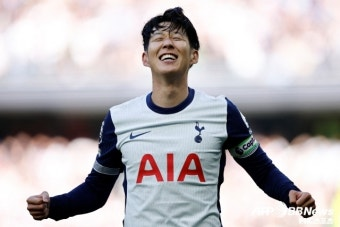
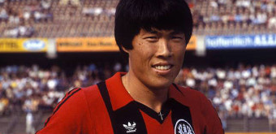
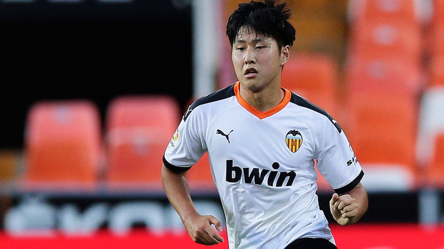
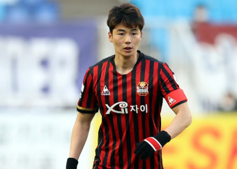

한국인 선수 기록

- 손흥민
- 소속팀: 토트넘
- 최고성적: 우승
- 기록: 26경기 9득점
- ★ 한국인 선수 유로파리그 첫 멀티골 ★
- ★ 한국인 선수 최초 주장으로서 우승 ★

- 차범근
- 소속팀: 프랑크푸르트, 레버쿠젠
- 최고성적: 우승
- 기록: 37경기 10득점
- ★ 한국인 선수 최초 결승전 득점 ★
- 박지성
- 소속팀: 맨체스터 유나이티드, psv
- 최고성적: 8깅
- 기록: 10경기 0득점

- 이강인
- 소속팀: 발렌시아 cf
- 최고성적: 4강
- 기록: 2경기 0득점
- ★ 한국인 선수 최연소 유로파 리그 데뷔 ★

- 기성용
- 소속팀: 셀틱
- 최고성적: 조별리그
- 기록: 5경기 1득점
- ★ 한국인 선수 유로파리그 첫 pk골 ★